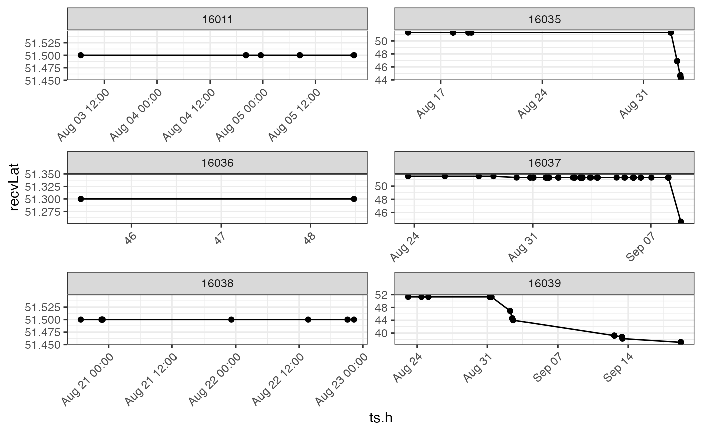
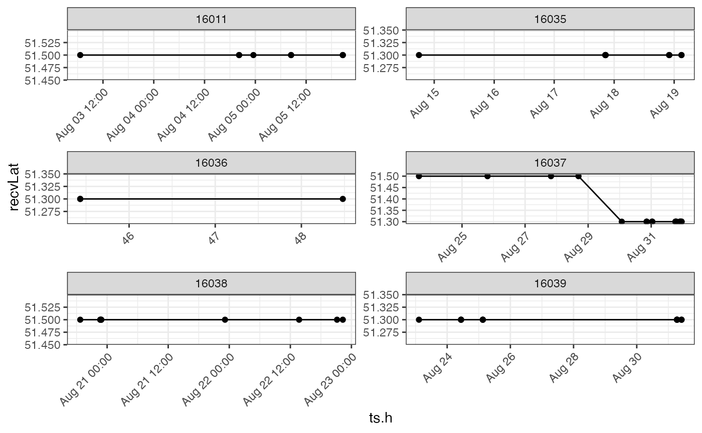
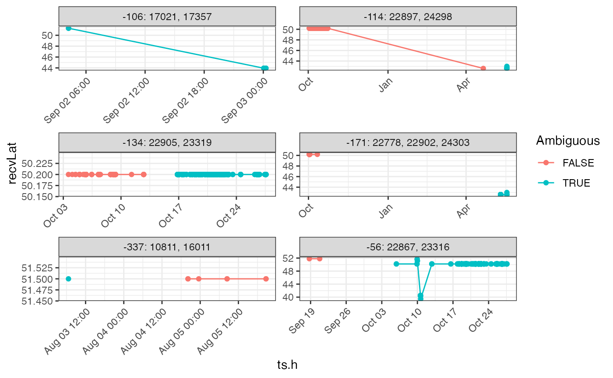
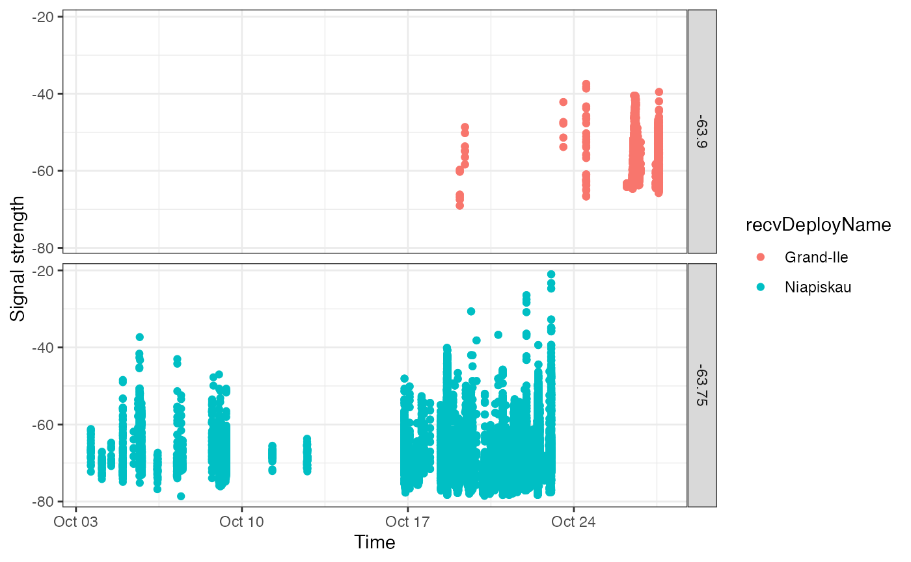
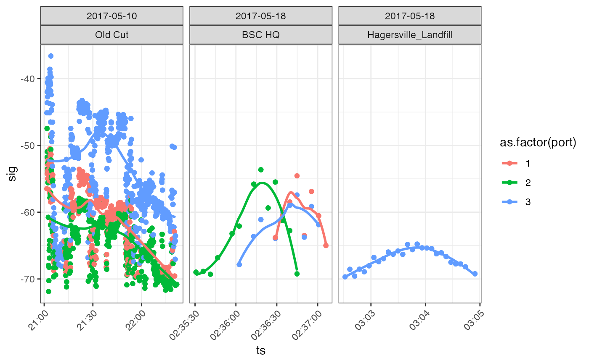
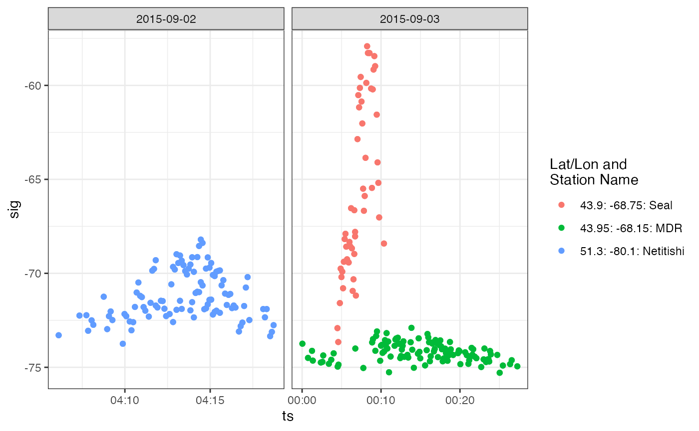
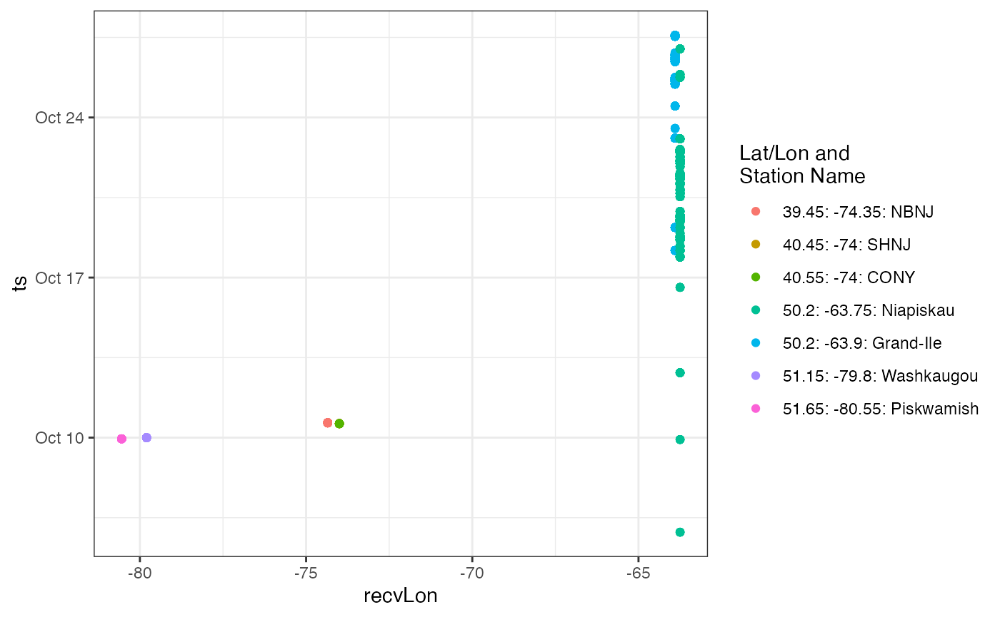
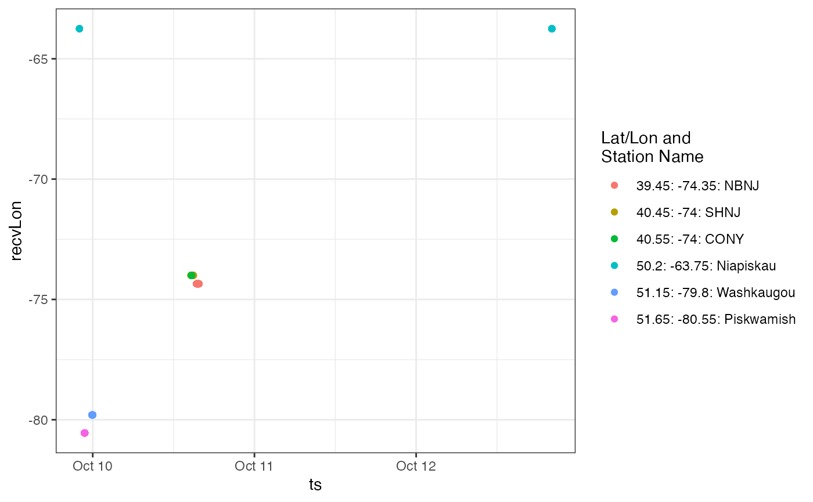
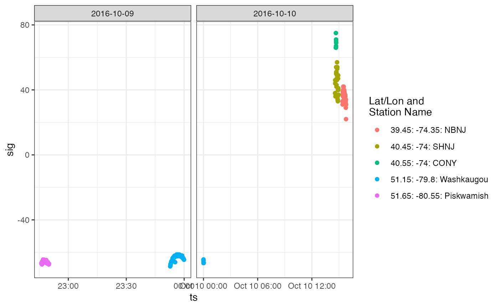

Chapter 5 - Data Cleaning
Tara L. Crewe, Zoe Crysler, and Philip Taylor. Revisions by Catherine Jardine, Steffi LaZerte and Denis Lepage
05-data-cleaning.RmdThere are three sources of ‘error’ that can result in tag detections appearing in your database that are incorrect.
First, random radio noise (‘static’) can be detected and interpreted to be the transmission of a tag. These are called ‘false positives’.
Second, despite our best efforts to avoid it, duplicate tags are sometimes transmitting in the network at the same time. When two tags are deployed at the same time that have the same ID code, burst interval, and nominal transmit frequency, it results in situations where the detections may belong to either tag. If that happens, we must rely on contextual information to separate them (if we can). We term these ‘Ambiguous tags’.
Third, a tag can appear to be present when two tags are transmitting at the same time that by chance produce a signal that looks like a third tag that is not in fact present. Such tags are most common at roosting sites or breeding colonies, where many tags are transmitting simultaneously. We term these ‘Aliased tags’. We do not deal explicitly with Aliased tags in this chapter; we are working on a way to globally identify them and eliminate them from the data. We mention them here because you may encounter situations with what appear to be highly plausible detections that don’t make biological sense. Please contact us if you think you have some of these Aliased tag detections in your database.
The goal of this chapter is to provide you with the tools you need to check your data for false detections, and remove them from your data. We do so by providing example workflows that deal with ‘false positives’ and ‘ambiguous tags’ in the following steps:
Run a preliminary filter to remove all detections with
runLenof 3 or less, and detections with intermediaterunLens made during periods of high noise/activity.
A run is a group of consecutive detections of a tag detected on a single antenna at a single receiver. In general, a detection with a run length of 2 or 3 (i.e., 2 or 3 bursts) has a high probability of being a false positive detection. With the exception of a few ‘quiet’ stations with little noise, we generally recommend that you filter out all detections with a run length of 3 or less. However, because you will likely lose some true detections in the process, we also recommend that after a full analysis of your data, you return to these detections and examine them individually, to determine (usually contextually) if they can be considered real. Stations that are particularly noisy may also have false detections with longerrunLens.Determine how many of your tag detections may be ambiguous detections
Provide a workflow for examining individual tags, and determine if runs in those tags are errors
Filter errors from your data
Load required packages
Follow the instructions in Chapter 2 to install the following packages before loading, if they are not already installed.
Load detections data
Recall from Chapter 3 that when accessing the sample database, you will need to input motus.sample in the R console as both username and password when prompted by the tagme() user authentication process. This section assumes you have already completed the initial sample data download.
sql.motus <- tagme(176, update = TRUE, dir = "./data/")## Checking for new data in project 176## activity: 0 new batch records to check## nodeData: 0 new batch records to checkAssess tag detections
First, determine which project tags have detections. There are several reasons why deployed tags might not be detected, including:
The tag was not properly activated on deployment. To avoid this, always check that a tag is active using a hand-held receiver before attaching the tag to your study animal and releasing it.
An animal with a properly activated tag might not have passed within range of a receiving station. Study designs that incorporate strategic placement of receivers to meet project goals can improve the probability of a tag being detected.
Missing or incorrect tag deployment metadata in the Motus database can result in the data processing algorithm not ‘looking’ for your tag at the time the tag was deployed, or at all. Please ensure your tag metadata are entered correctly.
Before going further, please check whether any of your tags were deployed more than once, as described in section @ref(checkNumberTagDeployments). If so, you will need to use tagDeployID or a combination of motusTagID and tagDeployID to uniquely define detections associated with a tag deployment (either will do, but combining the two fields will let you know which tagID is associated with each deployment).
In the sample data, all tags were deployed only once, and so we use the motusTagID as a unique identifier for a tag deployment in all R code throughout the book.
Using the count() function we can see that there are detections for 18 tags deployed by the sample project.
tbl(sql.motus, "alltags") %>%
filter(tagProjID == 176) %>% # subset to include only tags registered to project
count(motusTagID) %>%
as.data.frame()## motusTagID n
## 1 16011 127
## 2 16035 456
## 3 16036 118
## 4 16037 1353
## 5 16038 162
## 6 16039 1126
## 7 16044 305
## 8 16047 839
## 9 16048 98
## 10 16052 159
## 11 17357 289
## 12 19129 1936
## 13 22867 5767
## 14 22897 34796
## 15 22902 2923
## 16 22905 26010
## 17 23316 5734
## 18 23319 22759If we break down these counts by run length using the following code we further see that many have run lengths of 3 (the run 3 column).
tbl(sql.motus, "alltags") %>%
filter(tagProjID == 176) %>% # subset to include only tags registered to project
mutate(rl.gt.3 = if_else(runLen == 3, "run 3", "run > 3")) %>%
count(motusTagID, rl.gt.3) %>%
collect() %>%
spread(key = rl.gt.3, value = n)## # A tibble: 18 × 3
## # Groups: motusTagID [18]
## motusTagID `run > 3` `run 3`
## <int> <int> <int>
## 1 16011 118 9
## 2 16035 441 15
## 3 16036 115 3
## 4 16037 1335 18
## 5 16038 156 6
## 6 16039 1117 9
## 7 16044 287 18
## 8 16047 758 81
## 9 16048 83 15
## 10 16052 144 15
## 11 17357 286 3
## 12 19129 1801 135
## 13 22867 5572 195
## 14 22897 34373 423
## 15 22902 2854 69
## 16 22905 25782 228
## 17 23316 5551 183
## 18 23319 22567 192Although some of these may be valid detections, we have found it simpler to just remove them from our analysis, and possibly revisit them at a later stage. In the next few sections we will explore a series of filters that do just this.
Preliminary filtering
We can perform some preliminary filtering based on run length (runLen). As runs are composed of sequences of hits, the longer the run the more confident we can be that it represents a true detection. However, local conditions at an individual receiver may vary in their exposure to background radio noise. Sites with relatively more background noise may be more prone to reporting false detections. Therefore the standard motus filter relies both on the length of the run, and the amount of radio activity at a given site. This value is stored as a field called motusFilter in the runs table. An additional table (activity) allows users to calculate a filter based on different criteria if they want.
Understanding the motusFilter
Starting in July 2019, data downloaded from motus with the tagme() function will include a standard filter value that can be used to identify detections that we believe have a higher probability of being false hits. The various outputs on the motus web site are pre-filtered, but the R package provides access to all detections, allowing users more control over which detections to keep or omit. The motusFilter field in the runs table represents the probability that the run is a true detection. Currently the motusFilter contains just two values 0 or 1. Runs with a motusFilter of 0 have a low probability of being true detections.
How the motusFilter is generated
The motusFilter is based the number of detections of different run lengths at a given site, across all motus projects. Periods with lots of radio interference will typically generate a high number of very short runs that are in reality spurious data. In the presence of a high ratio of runs with length = 2 at a given time, we consider that site as ‘noisy’ and increase the minimum threshold for run lengths that we consider to be valid detections.
In general, a detection with a run length of 2 or 3 (i.e., 2 or 3 bursts) has a relatively high probability of being a false positive detection. Therefore, runs with a length 3 or less are conservatively assigned a motusFilter of 0. For runs greater than length 3, data in the activity table provides a method of assessing the relative amount of background noise at a site which can be used to assess the probability of these runs being true detections. The activity table provides the number of runs of various lengths for each hour (called hourBin) within each batch and for each antenna. A high number of detections within an hour (e.g., >= 100) with a high proportion of short runs (e.g., length 2 >= 85%) are indicative of a noisy environment, more likely to generate false positives. For those periods, we treat the intermediate run lengths (3 < runLen < 5) as invalid (motusFilter = 0). Intermediate run lengths are otherwise considered valid (motusFilter = 1).
The motusFilter values in the runs table have been calculated on the basis of the above criteria, which were determined through some empirical examination of data. If you are working with a dataset downloaded through tagme() prior to July 2019 it will not include those values. In those cases, you will either need to download a new copy of the entire dataset for your project or receiver, or to use the filterByActivity() function described below to calculate the missing values.
To omit runs identified as dubious by motusFilter we can use an anti-join.
# Number of rows with runs 3 hits or less
filter(tbl(sql.motus, "alltags"), runLen <= 3) %>%
collect() %>%
nrow()## [1] 83147
# Identify runs to remove
to_remove <- tbl(sql.motus, "runs") %>%
select(runID, motusFilter) %>%
filter(motusFilter == 0)
# Use anti-join to remove those runs from the alltags
tbl_filtered <- anti_join(tbl(sql.motus, "alltags"), to_remove, by = "runID")
# Number of rows with runs 3 hits or less after being filtered
filter(tbl_filtered, runLen <= 3) %>%
collect() %>%
nrow()## [1] 0
Custom filters with the filterByActivity() function
The motusFilter is one method of determining false detections, but motus users are encouraged to explore alternative filter parameters. The motus R-package includes a filterByActivity() function that allows users to specify custom parameters used to identify false positives based on the activity table. Users can return either just the “true” positives (return = "good"), just the “false” positives (return = "bad") or all hits (return = "all") but with a new column, “probability”, which reflects either 0 (expected false positive) or 1 (expected true positive).
For example, the following code, adds a probability column to the sample project data, which is identical to the motusFilter column (i.e., by default filterByActivity() uses the same conditions).
Note that this function requires the SQLite database connection (not a flat data frame), but returns a data.frame of the alltags view (not a SQLite database connection).
tbl_motusFilter <- filterByActivity(sql.motus, return = "all")Users can adjust these parameters to be less strict (i.e., exclude fewer detections). This example excludes all runs of length 2 or less and will exclude any runs less than length 4 from hourBins which have more than 500 runs and where at least 95% of those runs have a run length of 2.
tbl_relaxed <- filterByActivity(sql.motus, minLen = 2, maxLen = 4,
maxRuns = 500, ratio = 0.95, return = "all")These parameters can also be more strict (i.e., exclude more detections). This next example excludes all runs of length 4 or less and will exclude any runs less than length 10 from hourBins which have more than 50 runs and where at least 75% of those runs have a run length of 2.
tbl_strict <- filterByActivity(sql.motus, minLen = 4, maxLen = 10,
maxRuns = 50, ratio = 0.75, return = "all")Note that the filters may exclude some true detections in the process. Therefore, we recommend that after a full analysis of your data, you return to these detections and examine them individually, to determine (usually contextually) if they can be considered real.
Preparing the data
When accessing the alltags view, we filter the data and remove some unnecessary variables to reduce the overall size of the data set and make it easier to work with. This is particularly important for large, unwieldy projects; details on how to view the variables in a tbl, and how to filter and subset prior to collecting data into a dataframe can be found in Chapter @ref(convertToFlat).
Label detections by probability
First we will use the filterByActivity() function to label dubious detections. This returns all the data in the alltags view with a new probability column.
tbl.alltags <- filterByActivity(sql.motus, return = "all")Alternatively we can change the default, so the filterByActivity() function uses the alltagsGPS view. However, on very large databases this could be slow.
tbl.alltags.gps <- filterByActivity(sql.motus, return = "all", view = "alltagsGPS")Clean up
Let’s filter to the ‘good’ detections. We will filter to 1 for detections to keep and 0 for dubious detections. Then we’ll use the collect() and as.data.frame() functions to transform the dataframe into a ‘flat’ (i.e. non SQLite) file, and then transform all time stamp variables from seconds since January 1 1970 to datetime (POSIXct) format.
df.alltags.sub <- tbl.alltags %>%
filter(probability == 1) %>%
collect() %>%
as.data.frame() %>%
mutate(ts = as_datetime(ts), # work with dates AFTER transforming to flat file
tagDeployStart = as_datetime(tagDeployStart),
tagDeployEnd = as_datetime(tagDeployEnd))Let us also save the excluded detections for later analysis.
Add GPS data
The filterByActivity() function can use the alltagsGPS view, but this may be slow. A way around this speed problem is to use the getGPS() function to retrieve the GPS values of a data subset (data) after the data has been filtered.
Note that in this example, the sample dataset doesn’t have GPS data
# Retrieve GPS data for each hitID
gps_index <- getGPS(sql.motus, data = df.alltags.sub, by = "closest")
# Merge GPS points in with our data
df.alltags.sub <- left_join(df.alltags.sub, gps_index, by = "hitID")We match GPS locations to hitIDs according to one of several different time values, specified by the by argument. This can be the closest location in time, the daily median location, or the median location within X minutes of a hitID (here, X can be any number greater than zero and represents the size of the time block in minutes over which to calculate a median location). If using the closest option, you can also specify a cutoff which will only match GPS records which are within cutoff = X minutes of the hit. This way you can avoid having situations where the ‘closest’ GPS record is actually days away (see also Chapter @ref(addGPS)).
We then create receiver latitude and longitude variables (recvLat, recvLon, recvAlt) based on the coordinates recorded by the receiver GPS (gpsLat, gpsLon, gpsAlt), and where those are not available, infilled with coordinates from the receiver deployment metadata (recvDeployLat, recvDeployLon, recvDeployAlt). Missing GPS coordinates may appear as NA if they are missing, or as 0 or 999 if there was a problem with the unit recording.
Finally, we create ‘receiver names’ by adding rounded recvLat and recvLon to the recvDeployName for those receivers in the database that do not have these values filled in. As more users explore (and fix!) their metadata, these missing values should begin to disappear. We’ll fix this here as sometimes if there is missing metadata (ie. a missing receiver deployment spanning some of your detections), you will get NAs which can lead to problems later on.
df.alltags.sub <- df.alltags.sub %>%
mutate(recvLat = if_else((is.na(gpsLat)|gpsLat == 0|gpsLat == 999),
recvDeployLat, gpsLat),
recvLon = if_else((is.na(gpsLon)|gpsLon == 0|gpsLon == 999),
recvDeployLon, gpsLon),
recvAlt = if_else(is.na(gpsAlt), recvDeployAlt, gpsAlt)) %>%
select(-noise, -slop, -burstSlop, -done, -bootnum, -mfgID,
-codeSet, -mfg, -nomFreq, -markerNumber, -markerType,
-tagDepComments, -fullID, -deviceID, -recvDeployLat,
-recvDeployLon, -recvDeployAlt, -speciesGroup, -gpsLat,
-gpsLon, -recvAlt, -recvSiteName) %>%
mutate(recvLat = plyr::round_any(recvLat, 0.05),
recvLon = plyr::round_any(recvLon, 0.05),
recvDeployName = if_else(is.na(recvDeployName),
paste(recvLat, recvLon, sep=":"),
recvDeployName))
# Note that in the select statement, you can just select the variables you need
# e.g.: select(runID, ts, sig, freqsd, motusTagID, ambigID, runLen, tagProjID,
# tagDeployStart, tagDeployEnd, etc.)
# As opposed to those you don't need (-done, -bootnum, etc.)Now we have a nice clean data frame!
Preliminary data checks
Prior to more specific filtering the data, we will perform a few summaries and plots of the data.
Summarize tag detections
An initial view of the data is best achieved by plotting. We will show you later how to plot detections on a map, but we prefer a simpler approach first; plotting detections through time by both latitude and longitude. First however, we should simplify the data. If we don’t, we risk trying to plot thousands or millions of points on a plot (which can take a long time). We’ll do this by creating a little function here, since we will use this operation again in future steps.
Note that we will need to remove about 150 detections, because there is no geographic data associated with the receiver metadata, and so no way to determine the location of those detections. Do a simple check to see if these receivers belong to you, and if so, please fix the metadata online!
For example, here we can see which receivers are missing (is.na(recvLat)).
df.alltags.sub %>%
filter(is.na(recvLat)) %>%
select(recvLat, recvLon, recvDeployName, recvDeployID, recv,
recvProjID, recvProjName) %>%
distinct()## recvLat recvLon recvDeployName recvDeployID recv recvProjID
## 1 NA NA NP mobile 3813 Lotek-280 176
## 2 NA NA NA:NA NA SG-1415BBBK0382 NA
## 3 NA NA NA:NA NA SG-2814BBBK0547 NA
## recvProjName
## 1 SampleData
## 2 <NA>
## 3 <NA>Simplify the data for plotting
We can simplify the data by summarizing by the runID. If you want to summarize at a finer/coarser scale, you can also create other groups. The simplest alternative is a rounded timestamp variable; for example by using mutate(ts.h = plyr::round_any(ts, 3600). Other options are to just use date (e.g date = as_date(ts)).
Here is an advanced example creating a function so we can re-use this simplification later.
fun.getpath <- function(df) {
df %>%
filter(tagProjID == 176, # keep only tags registered to the sample project
!is.na(recvLat) | !(recvLat == 0)) %>% # drops data without lon/lat
group_by(motusTagID, runID, recvDeployName, ambigID,
tagDepLon, tagDepLat, recvLat, recvLon) %>%
#summarizing by runID to get max run length and mean time stamp:
summarize(max.runLen = max(runLen), ts.h = mean(ts)) %>%
arrange(motusTagID, ts.h)
} # end of function
df.alltags.path <- fun.getpath(df.alltags.sub)## `summarise()` has grouped output by 'motusTagID', 'runID', 'recvDeployName', 'ambigID', 'tagDepLon', 'tagDepLat', 'recvLat'. You can override using the `.groups` argument.We would initially plot a subset of tags by either latitude or longitude, to get an overview of where there might be issues. Here, to simplify the example, we plot only six tags. We avoid examining the ambiguous tags for now.
ggplot(data = filter(df.alltags.path,
motusTagID %in% c(16011, 16035, 16036, 16037, 16038, 16039)),
aes(x = ts.h, y = recvLat)) +
theme_bw() +
theme(axis.text.x = element_text(angle = 45, vjust = 1, hjust = 1)) +
geom_point() +
geom_path() +
facet_wrap(~ motusTagID, scales = "free", ncol = 2)
Although there don’t seem to be any immediate problems, let’s take a look at the tags showing up around 44 degrees during September. Let’s examine these tags in more detail by examining the runs in the data frame that are associated with detections in September.
df.alltags.sub %>%
filter(month(ts) %in% c(9),
motusTagID %in% c(16035, 16037, 16039),
recvLat < 44) %>%
group_by(recvDeployName, month(ts), runLen) %>%
summarize(n = length(ts),
n.tags = length(unique(motusTagID))) %>%
arrange(runLen)## `summarise()` has grouped output by 'recvDeployName', 'month(ts)'. You can override using the `.groups` argument.## # A tibble: 13 × 5
## # Groups: recvDeployName, month(ts) [5]
## recvDeployName `month(ts)` runLen n n.tags
## <chr> <dbl> <int> <int> <int>
## 1 Assateague State Park 9 6 6 1
## 2 FINWR 9 6 6 1
## 3 FINWR 9 10 10 1
## 4 FINWR 9 20 20 1
## 5 Prime Hook 9 23 23 1
## 6 BULL 9 24 24 1
## 7 Prime Hook 9 27 27 1
## 8 Bombay Hook 9 32 32 1
## 9 Prime Hook 9 32 32 1
## 10 Bombay Hook 9 36 36 1
## 11 BULL 9 38 38 1
## 12 Bombay Hook 9 53 53 1
## 13 FINWR 9 73 73 1Since we have already filtered dubious detections, these remaining ones don’t seem immediately unreliable (all with runs of at least 6). If you are interested, you can re-run the code above, but on the full data frame (tbl(sql.motus, "alltags")) containing run lengths of 2 or 3. You will see that there are likely false positive detections at these sites, that were already eliminated by filtering. These additional detections provide further evidence that these sites experienced some radio noise during these particular months, resulting in some false positive detections.
You may also be interested more generally in exploring which data have only short run lengths. For example, the following code shows the maximum run length at all sites by month (for those runs which haven’t been removed by filtering).
df.alltags.sub %>%
mutate(month = month(ts)) %>%
group_by(recvDeployName, month) %>%
summarize(max.rl = max(runLen)) %>%
spread(key = month, value = max.rl)## `summarise()` has grouped output by 'recvDeployName'. You can override using the `.groups` argument.## # A tibble: 43 × 8
## # Groups: recvDeployName [43]
## recvDeployName `2` `3` `4` `5` `8` `9` `10`
## <chr> <int> <int> <int> <int> <int> <int> <int>
## 1 Assateague State Park NA NA NA NA NA 6 NA
## 2 BennettMeadow NA NA NA NA NA NA 11
## 3 BISE NA NA NA NA NA NA 6
## 4 Bombay Hook NA NA NA NA NA 53 NA
## 5 Brier2 NA NA NA NA NA 29 NA
## 6 BSC HQ NA NA NA 21 NA NA NA
## 7 BULL NA NA NA NA NA 38 5
## 8 Comeau (Marshalltown) NA NA NA NA NA 4 NA
## 9 CONY NA NA NA NA NA NA 7
## 10 D'Estimauville NA NA NA NA NA 40 NA
## # … with 33 more rowsAlternatively, you can produce a list of sites where the maximum run length of detections was never greater than (say) 4, which may sometimes (but not always!) indicate they are simply false detections.
df.alltags.sub %>%
mutate(month = month(ts)) %>%
group_by(recvDeployName, month) %>%
summarize(max.rl = max(runLen)) %>%
filter(max.rl < 5) %>%
spread(key = month, value = max.rl)## `summarise()` has grouped output by 'recvDeployName'. You can override using the `.groups` argument.## # A tibble: 3 × 4
## # Groups: recvDeployName [3]
## recvDeployName `4` `9` `10`
## <chr> <int> <int> <int>
## 1 Comeau (Marshalltown) NA 4 NA
## 2 Old Cut 4 NA NA
## 3 TRUS NA NA 4It is impossible to go through every possible issue that you may encounter here. Users are strongly encouraged to explore their data fully, and make reasoned decisions on which detections are unlikely or indeterminate. Through the rest of this chapter we will show you how to collect these runs, and apply them to your data prior to analysis.
To start, if we decided that those detections in September were false positives, we could create a data frame that contains the motusTagIDs and runIDs for them.
We could then re-create the plot with the newly filtered data.
# Collect dubious detections
df.block.1 <- df.alltags.sub %>%
filter(month(ts) %in% 9,
motusTagID %in% c(16035, 16037, 16039)) %>%
select(motusTagID, runID) %>%
distinct()
# use the function we created earlier to make a new 'path' data frame for plotting
df.alltags.path <- fun.getpath(filter(df.alltags.sub,
motusTagID %in% c(16011, 16035, 16036,
16037, 16038, 16039),
!(runID %in% df.block.1$runID)))## `summarise()` has grouped output by 'motusTagID', 'runID', 'recvDeployName', 'ambigID', 'tagDepLon', 'tagDepLat', 'recvLat'. You can override using the `.groups` argument.
ggplot(data = df.alltags.path, aes(x = ts.h, y = recvLat)) +
theme_bw() +
theme(axis.text.x = element_text(angle = 45, vjust = 1, hjust = 1)) +
geom_point() +
geom_path() +
facet_wrap(~ motusTagID, scales = "free", ncol = 2)
The reader is encouraged to explore the rest of the tags within this group, to determine if there are additional false positives.
Examining ambiguous detections
Before we go further, we need to check to see if any tags have ambiguous detections. If there are, we will need to explore them, and create additional filters to remove detections from our database.
Are any of your tags associated with ambiguous detections?
The clarify() function in the motus R package provides a summary of ambiguities in the detections data. Each ambigID refers to a selection of detections that could belong to one or more (up to 6) motusTagIDs, which are listed in the id1 to id6 columns:
clarify(sql.motus)## ambigID numHits id1 fullID1 id2
## 1 -56 5734 22867 SampleData#272.1:5.3@166.38(M.22867) 23316
## 2 -106 279 17021 Selva#172:6.1@166.38(M.17021) 17357
## 3 -114 86 22897 SampleData#303.1:5.3@166.38(M.22897) 24298
## 4 -134 22749 22905 SampleData#301:5.3@166.38(M.22905) 23319
## 5 -171 2074 22778 RBrownAMWO#308:5.3@166.38(M.22778) 22902
## 6 -337 4 10811 Niles#152:6.1@166.38(M.10811) 16011
## fullID2 id3 fullID3
## 1 SampleData#272:5.3@166.38(M.23316) NA <NA>
## 2 SampleData#172:6.1@166.38(M.17357) NA <NA>
## 3 NEONICS#303:5.3@166.38(M.24298) NA <NA>
## 4 SampleData#301.1:5.3@166.38(M.23319) NA <NA>
## 5 SampleData#308.1:5.3@166.38(M.22902) 24303 NEONICS#308:5.3@166.38(M.24303)
## 6 SampleData#152:6.1@166.38(M.16011) NA <NA>
## id4 fullID4 id5 fullID5 id6 fullID6 motusTagID tsStart tsEnd
## 1 NA <NA> NA <NA> NA <NA> NA NA NA
## 2 NA <NA> NA <NA> NA <NA> NA NA NA
## 3 NA <NA> NA <NA> NA <NA> NA NA NA
## 4 NA <NA> NA <NA> NA <NA> NA NA NA
## 5 NA <NA> NA <NA> NA <NA> NA NA NA
## 6 NA <NA> NA <NA> NA <NA> NA NA NAWe can see that there are six tags with ambiguous detections within this data set. Detections associated with five of the six ambigIDs could belong to one of two tags, and detections associated with one ambigID (-171) could belong to one of three tags. The fullID fields list the project names associated with the duplicate tags (e.g., “SampleData”, “Selva”, “Niles”), along with features of the tags (manufacturer tag ID, burst, and transmit frequency).
Let’s get a data frame of these, and do some plots to see where there may be issues.
df.ambigTags <- df.alltags.sub %>%
select(ambigID, motusTagID) %>%
filter(!is.na(ambigID)) %>%
distinct() Using our getpath() function, we’ll create paths and then plot these detections. We’ll add some information to the plot, showing where (in time) the tags are actually ambiguous. We can then inspect the overall plots (or portions of them) to determine if we can contextually unambiguously assign a detection of an ambiguous tag to a single deployment.
df.alltags.path <- fun.getpath(filter(df.alltags.sub,
motusTagID %in% df.ambigTags$motusTagID,
tagProjID == 176)) %>%
# create a boolean variable for ambiguous detections:
mutate(Ambiguous = !(is.na(ambigID))) ## `summarise()` has grouped output by 'motusTagID', 'runID', 'recvDeployName', 'ambigID', 'tagDepLon', 'tagDepLat', 'recvLat'. You can override using the `.groups` argument.
# to put all ambiguous tags from the same project on the same plot together, we
# need to create a new 'ambig tag' variable we call 'newID.
ambigTags.2 <- filter(df.alltags.sub) %>%
select(ambigID, motusTagID) %>%
filter(!is.na(ambigID)) %>%
distinct() %>%
group_by(ambigID) %>%
summarize(newID = paste(unique(ambigID), toString(motusTagID), sep = ": ")) %>%
left_join(df.ambigTags, by = "ambigID")
# and merge that with df.alltags.path
df.alltags.path <- left_join(df.alltags.path, ambigTags.2, by = "motusTagID") %>%
arrange(ts.h)
ggplot(data = df.alltags.path,
aes(x = ts.h, y = recvLat, group = Ambiguous, colour = Ambiguous)) +
theme_bw() +
theme(axis.text.x = element_text(angle = 45, vjust = 1, hjust = 1)) +
geom_point() +
geom_path() +
facet_wrap(~ newID, scales = "free", ncol = 2)
Let’s deal with the easy ones first.
ambigID -337: motusTagIDs 10811 and 16011
df.alltags.sub %>%
filter(ambigID == -337) %>%
count(motusTagID, tagDeployStart, tagDeployEnd, tagDepLat, tagDepLon)## motusTagID tagDeployStart tagDeployEnd tagDepLat tagDepLon n
## 1 10811 2014-10-28 07:00:00 2015-08-03 07:00:00 39.1140 -74.7142 4
## 2 16011 2015-08-02 11:39:59 2015-12-17 11:39:59 51.4839 -80.4500 4We can see from the plot that ambiguous tag -337 is ambiguous only at the beginning of the deployment.
We can see from the summary of the tag deployment data that there were only 4 detections, at the exact latitude of deployment of tag 16011, and just before the non-ambiguous detections of motusTagID 16011. So the issue here is simply that the tail end of the deployment of tag 10811 slightly overlaps with the deployment of tag 16011. We can confidently claim these detections as belonging to motusTagID 16011, and remove the ambiguous detections assigned to the other tag.
We’ll create another data frame to keep track of these runs.
# we want the detections associated with the motusTagID that we want to
# ultimately REMOVE from the data frame
df.block.2 <- df.alltags.sub %>%
filter(ambigID == -337,
motusTagID == 10811) %>%
select(motusTagID, runID) %>%
distinct()ambigID -134: motusTagIDs 22905 and 23319
df.alltags.sub %>%
filter(ambigID == -134) %>%
count(motusTagID, tagDeployStart, tagDeployEnd,
tagDepLat, tagDepLon, month(ts))## motusTagID tagDeployStart tagDeployEnd tagDepLat tagDepLon
## 1 22905 2016-10-01 16:00:00 2017-06-12 16:00:00 50.19278 -63.74528
## 2 23319 2016-10-15 16:00:00 2017-06-26 16:00:00 50.19278 -63.74528
## month(ts) n
## 1 10 22279
## 2 10 22279Here we have a similar situation, but one that is a bit more complex. Two identical tags were deployed at the same location, shortly after one another. Let’s examine a simple plot.
ggplot(data = filter(df.alltags.sub,
motusTagID %in% c(22905, 23319)),
aes(x = ts, y = sig, group = recvDeployName, colour = recvDeployName)) +
geom_point() +
theme_bw() +
labs(x = "Time", y = "Signal strength") +
facet_grid(recvLon ~ .)
It appears that these are overlapping detections, at two sites in proximity to one another. Additional information from the field researchers may enable us to disentangle them, but it is not clear from the data.
We will therefore remove all detections of this ambiguous tag from the database.
# we want the detections associated with the motusTagID that we want to
# ultimately REMOVE from the data frame
df.block.3 <- df.alltags.sub %>%
filter(ambigID == -134) %>%
select(motusTagID, runID) %>%
distinct()ambigID -171: motusTagIDs 22778, 22902 and 22403
The ambiguous detections for this tag, which occur in the Great Lakes region, could also belong to motusTagID 22778 from the RBrownAMWO project or motusTagID 24303 from the Neonics project. Let’s take a closer look at these detections.
First, find the deployment dates and locations for each tag.
df.alltags.sub %>%
filter(ambigID == -171) %>%
filter(!is.na(tagDeployStart)) %>%
select(motusTagID, tagProjID, start = tagDeployStart, end = tagDeployEnd,
lat = tagDepLat, lon = tagDepLon, species = speciesEN) %>%
distinct() %>%
arrange(start) %>%
collect() %>%
as.data.frame()## motusTagID tagProjID start end lat
## 1 22902 176 2016-10-01 16:00:00 2017-06-12 16:00:00 50.19278
## 2 22778 82 2016-10-21 00:00:00 2018-09-09 00:00:00 45.13535
## 3 24303 146 2017-05-10 22:30:59 2017-06-30 22:30:59 42.60600
## lon species
## 1 -63.74528 Red Knot
## 2 -67.29323 American Woodcock
## 3 -80.46900 White-crowned SparrowAnd plot the ambiguous detections.
df.ambig.171 <- filter(df.alltags.sub, ambigID == -171)
ggplot(data = df.ambig.171, aes(x = ts, y = sig, colour = as.factor(port))) +
theme_bw() +
theme(axis.text.x = element_text(angle = 45, vjust = 1, hjust = 1)) +
geom_point() +
geom_smooth(method = "loess", se = FALSE) +
facet_wrap(as_date(ts) ~ recvDeployName, scales = "free_x")## `geom_smooth()` using formula 'y ~ x'
We see that there are a large number of ambiguous detections on 10 May 2017 at Old Cut (Long Point, Lake Erie, Ontario), consistent with a bird ‘hanging around’. These are almost certainly detections of motusTagID ‘24303’ which was deployed at Old Cut on 10 May 2017. Subsequent detections on the 18th of May are near Old Cut (Bird Studies Canada HQ, Port Rowan, Ontario), and then a location to the North of Old Cut (Hagersville, Ontario). These detections are consistent with a bird departing on migration. Note in particular the pattern in the latter two panels of increasing then decreasing signal strength which indicates a bird is flying through the beam of an antenna.
These detections belong to another project, so we simply remove all detections of that ambiguous tag from our database.
# we want the detections associated with the motusTagID that we want to
# ultimately REMOVE from the data frame
df.block.4 <- df.alltags.sub %>%
filter(ambigID == -171) %>%
select(motusTagID, runID) %>%
distinct()ambigID -114: motusTagIDs 22897 and 24298
Next we look at the ambiguities for ambiguous tag -114.
df.alltags.sub %>%
filter(ambigID == -114) %>%
filter(!is.na(tagDeployStart)) %>%
select(motusTagID, tagProjID, start = tagDeployStart, end = tagDeployEnd,
lat = tagDepLat, lon = tagDepLon, species = speciesEN) %>%
distinct() %>%
arrange(start) %>%
collect() %>%
as.data.frame()## motusTagID tagProjID start end lat
## 1 22897 176 2016-10-01 16:00:00 2017-06-12 16:00:00 50.19278
## 2 24298 146 2017-05-10 03:00:00 2017-06-30 03:00:00 42.60690
## lon species
## 1 -63.74528 Red Knot
## 2 -80.46900 White-crowned SparrowWe again subset these and plot them. An initial plot suggested that all of the detections are of a migratory flight, so we construct a somewhat different plot from the one above, that emphasizes this behaviour better.
df.ambig.114 <- df.alltags.sub %>%
filter(ambigID == -114) %>%
mutate(LatLonStationName = paste(recvLat, recvLon, recvDeployName, sep=": "))
ggplot(data = df.ambig.114, aes(x = ts, y = sig, colour = LatLonStationName)) +
geom_point() +
theme_bw() 
Notice that the detections are consistent with a migratory departure from the Long Point area (Old Cut Field Station, Lake Erie, Ontario) about a week after the ambiguous tag 24298 was deployed at the same location. This again suggests that these ambiguous detections can be removed from our data because they belong to another project.
df.block.5 <- df.alltags.sub %>%
filter(ambigID == -114) %>%
select(motusTagID, runID) %>%
distinct()ambigID -106: motusTagIDs 17021 and 17357
These two tags pose an interesting problem. There is only a short period of overlap, between mid August 2015 and mid September. One individual is a Grey-cheeked Thrush, tagged in Colombia, the other a White-rumped Sandpiper, associated with the sample project.
df.alltags.sub %>%
filter(ambigID == -106) %>%
filter(!is.na(tagDeployStart)) %>%
select(motusTagID, tagProjID, start = tagDeployStart, end = tagDeployEnd,
lat = tagDepLat, lon = tagDepLon, species = speciesEN) %>%
distinct() %>%
arrange(start) %>%
collect() %>%
as.data.frame()## motusTagID tagProjID start end lat
## 1 17021 57 2015-04-30 05:00:00 2015-09-14 05:00:00 11.12265
## 2 17357 176 2015-08-11 07:20:00 2015-12-26 07:20:00 51.48390
## lon species
## 1 -74.08735 Gray-cheeked Thrush
## 2 -80.45000 White-rumped SandpiperWe plot the ambiguous detections to examine the period of overlap.
df.ambig.106 <- filter(df.alltags.sub, ambigID == -106)
ggplot(data = df.ambig.106,
aes(x = ts, y = sig,
colour = paste(recvLat, recvLon, recvDeployName, sep = ": "))) +
theme_bw() +
geom_point() +
scale_colour_discrete(name = "Lat/Lon and\nStation Name") +
facet_wrap(~ as_date(ts), scales = "free_x")
Both sets of detections are long run lengths, and look valid (increasing then decreasing signal strength). They are about a day apart, and so it is possible they represent two different birds, or the departure flight of the white-rumped sandpiper from its staging ground. Let’s use the siteTrans() function (in the motus package, see section @ref(siteTrans)) to examine the flight from Netitishi to MDR/Seal (in the Gulf of Maine)
df.ambig.106 %>%
filter(motusTagID == 17021) %>% # just pick one of the two ambiguous IDs
siteTrans(latCoord = "recvLat", lonCoord = "recvLon") %>%
ungroup() %>%
filter(rate < 60) %>% # remove the simultaneous detections from Seal and MDR
mutate(total.time = as.numeric(round(seconds_to_period(tot_ts)))) %>%
select(start = recvDeployName.x, end = recvDeployName.y,
date = ts.x, `rate(m/s)` = rate,
dist, total.time = total.time, bearing)## # A tibble: 1 × 7
## start end date `rate(m/s)` dist total.time bearing
## <chr> <chr> <dttm> <dbl> <dbl> <dbl> <dbl>
## 1 Netitishi_… MDR_44,… 2015-09-02 04:18:42 17.1 1.21e6 70879 128.These detections are >1200 km distant from one another, but the flight speed (17 m/s) is consistent with a white-rumped Sandpiper. Given that the Gray-cheeked Thrush tag was near the end of its expected lifetime, we can reasonably claim these detections for our project, and remove the ambiguous detections associated with motusTagID 17021.
df.block.6 <- df.alltags.sub %>%
filter(ambigID == -106, motusTagID == 17021) %>%
select(motusTagID, runID) %>%
distinct()ambigID -56: motusTagIDs 22867 and 23316
These two tags were also both deployed by the same project.
df.alltags.sub %>%
filter(ambigID == -56) %>%
filter(!is.na(tagDeployStart)) %>%
select(motusTagID, tagProjID, start = tagDeployStart, end = tagDeployEnd,
lat = tagDepLat, lon = tagDepLon, species = speciesEN) %>%
distinct() %>%
arrange(start) %>%
collect() %>%
as.data.frame()## motusTagID tagProjID start end lat
## 1 22867 176 2016-09-06 15:35:00 2017-05-18 15:35:00 51.79861
## 2 23316 176 2016-10-02 16:00:00 2017-06-13 16:00:00 50.19278
## lon species
## 1 -80.69139 Pectoral Sandpiper
## 2 -63.74528 Red KnotTag 23316 was deployed by the James Bay Shorebird Project (sample project) about three weeks after tag 22867, which was deployed from a location far to the west.
df.ambig.56 <- df.alltags.sub %>%
filter(ambigID == -56) %>%
mutate(sig = ifelse(sig > 0, sig * -1, sig))
ggplot(data = df.ambig.56,
aes(x = recvLon, y = ts,
colour = paste(recvLat, recvLon, recvDeployName, sep=": "))) +
theme_bw() +
geom_point() +
scale_colour_discrete(name="Lat/Lon and\nStation Name") 
We can see from the plot that a tag is detected consistently near longitude -65, which is near the deployment location for motusTagID 23316 and after it’s deployment start date, it was also present at -65 during and after detections far to the west. It’s likely all the detections at -65 belong to motusTagID 23316, but it is also clear that anything informative about this ambiguity occurs between about 9-11 October, so let’s zoom in on that part of the data set.
ts.begin <- ymd_hms("2016-10-06 00:00:00")
ts.end <- ymd_hms("2016-10-12 23:00:00")
ggplot(data = filter(df.ambig.56,
ts > ts.begin,
ts < ts.end),
aes(x = ts, y = recvLon,
colour = paste(recvLat, recvLon, recvDeployName, sep = ": "))) +
theme_bw() +
geom_point() +
scale_colour_discrete(name = "Lat/Lon and\nStation Name") 
We can see that the ambiguous tag was detected consistently at Niapiskau and Grand Ile before and after the period when it was also detected to the north and west (at Washkaugou and Piskwamish) and then to the south (NBNJ, SHNJ, and CONY). We can look at this transition by filtering out the portion of the data not near Niapiskau, and again using the siteTrans function from the motus package.
# other tag is a duplicate
df.56.tmp <- filter(df.ambig.56, !(recvLat == 50.2), motusTagID == 22867)
siteTrans(df.56.tmp, latCoord = "recvLat", lonCoord = "recvLon") %>%
ungroup() %>%
filter(rate < 60) %>% # get rid of simultaneous detections
mutate(total.time = as.numeric(round(seconds_to_period(tot_ts)))) %>%
select(start = recvDeployName.x,
end = recvDeployName.y,
date = ts.x, `rate(m/s)` = rate,
dist, total.time = total.time, bearing)## # A tibble: 2 × 7
## start end date `rate(m/s)` dist total.time bearing
## <chr> <chr> <dttm> <dbl> <dbl> <dbl> <dbl>
## 1 Piskwamis… Washkaug… 2016-10-09 22:49:59 20.3 7.63e4 3767 137.
## 2 Washkaugo… SHNJ_40.… 2016-10-10 00:00:42 24.3 1.27e6 52386 157.The bird made a 14.5 hour flight between Washkaugou and SHNJ at a rate of 24 m/s, which is plausible. The researchers involved may have other data to support or refute the inference (e.g. an actual sighting of the Red Knot still in Niapiskau after this flight was recorded) but it seems likely that while one tag remained at sites around longitude -65, another tag made the above migratory flights.
We can make another more detailed plot of signal strength to examine these potential migratory flights more closely:
df.56.tmp <- filter(df.alltags.sub, ambigID == -56, recvLon < -70)
ggplot(data = df.56.tmp,
aes(x = ts, y = sig,
colour = paste(recvLat, recvLon, recvDeployName, sep = ": "))) +
theme_bw() +
geom_point() +
scale_colour_discrete(name = "Lat/Lon and\nStation Name") +
facet_wrap(~ as_date(ts), scales = "free_x")
These look like typical fly-by patterns of increasing and then decreasing signal strength.
This, coupled with overall detection patterns and knowledge of the species, leads us to believe that the ambiguous detections can be reasonably divided between the two individuals; one detected consistently around longitude -65 (23316), and the other migrating SW during the same period (22867).
To address this problem, we need to create two filters - one that excludes ambiguous detections of tag 22867, and one that excludes some detections of 23316. In this instance, we can do this most easily by filtering on motusTagID and recvDeployName.
# tag 23316 was only ever at "Grand-Ile", "Niapiskau", and tag 22867 was never
# detected at those sites. So we exclude all detections not at "Grand-Ile",
# "Niapiskau" for motusTag 23316, and do the opposite for tag 22867.
df.block.7 <- df.alltags.sub %>%
filter(ambigID == -56,
motusTagID == 23316,
!(recvDeployName %in% c("Grand-Ile", "Niapiskau"))) %>%
select(motusTagID, runID) %>%
distinct()
df.block.8 <- df.alltags.sub %>%
filter(ambigID == -56,
motusTagID == 22867,
recvDeployName %in% c("Grand-Ile", "Niapiskau")) %>%
select(motusTagID, runID) %>%
distinct()Checking validity of run lengths of 2 or 3
At the beginning of this chapter, we dropped all detections with a run length of 2 or 3 or a run length of 4 in noisy conditions, because they are considered to have a high probability of being false positive. Now that we’ve cleaned the data, and are confident in the detections that remain, you might at this point decide to go back and take a closer look at those omitted detections. You could do this, for example, by re-running the various plots described in this chapter (begin with lat/lon by time plots), to see if any of those detections make sense in the context of where the true detections lie. It is up to the user to decide which detections are reasonable in terms of the biology and behaviour of each tagged individual.
Filtering the data
Filter and save to RDS
To filter the data, we can omit rows in the df.block data frames from the original data using a anti_join(), which removes rows from x (df.alltags.sub) which are present in y (df.block).
# combine our df.block data frames into a single dataframe
df.block.all <- bind_rows(df.block.0, df.block.2, df.block.3,
df.block.4, df.block.5, df.block.6, df.block.7,
df.block.8)
df.alltags.sub <- anti_join(df.alltags.sub, df.block.all, by = c("runID", "motusTagID"))Now save the local data frame as an RDS file, for use in the next chapter. Recall from Exporting detections in Chapter 3 that the RDS format preserves the R data structure, including time stamps. The other benefit of saving to RDS is that you have the output from a given workflow saved as a flat file, which you can access again with a simple readRDS statement.
saveRDS(df.alltags.sub, file = "./data/dfAlltagsSub.rds")And to read the data in again:
df.alltags.sub <- readRDS("./data/dfAlltagsSub.rds")Save a custom filter in the motus database, and apply it to the data
As an alternative to saving your data as an RDS file, the Motus R package offers functionalities to save your filters directly within your .motus file. Once they are saved in your database, you can do the type of anti_join() as above without having to rely on dataframes or an RDS file to store your data. To learn more about the functions available to work with Motus filters, refer to Appendix D for more details.
# combine our df.block data frames into a single dataframe
df.block.all <- bind_rows(df.block.0, df.block.2, df.block.3,
df.block.4, df.block.5, df.block.6, df.block.7,
df.block.8) %>%
mutate(probability = 0)
# create a new filter with name filtAmbigFalsePos and populate it with df.block.all
tbl.filter <- writeRunsFilter(sql.motus, "filtAmbigFalsePos",
df = df.block.all, delete = TRUE)## Warning in createRunsFilter(src, filterName, motusProjID, update = FALSE):
## Warning: filter already exists. Use createRunsFilter function with update=TRUE
## if you want to update the properties (e.g. name) of the existing filter.## Filter records saved